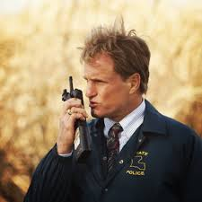
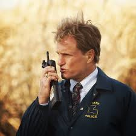

True Detective is an American anthology crime drama television series created and written by Nic Pizzolatto. The series, broadcast by the premium cable network HBO in the United States, premiered on January 12, 2014. Each season of the series is structured as a disparate, self-contained narrative, employing new cast ensembles and following various sets of characters and settings.
The first season, starring Matthew McConaughey, Woody Harrelson, Michelle Monaghan, Michael Potts, and Tory Kittles, takes place in Louisiana and follows a pair of Louisiana State Police homicide detectives, and their pursuit of a serial killer over a 17-year period. The second season, starring Colin Farrell, Rachel McAdams, Taylor Kitsch, Kelly Reilly, and Vince Vaughn,[1][2] is set in California, and focuses on three detectives from three cooperating police departments and a criminal-turned-businessman as they investigate a series of crimes they believed are linked to the murder of a corrupt politician.
The first season received generally excellent reviews from critics and earned high ratings for HBO. It was nominated for and won numerous awards and other accolades, chiefly for its acting, cinematography, writing, and direction. The second season received generally favorable reviews, praising its acting, cinematography and action sequences, and maintained high viewership for HBO.